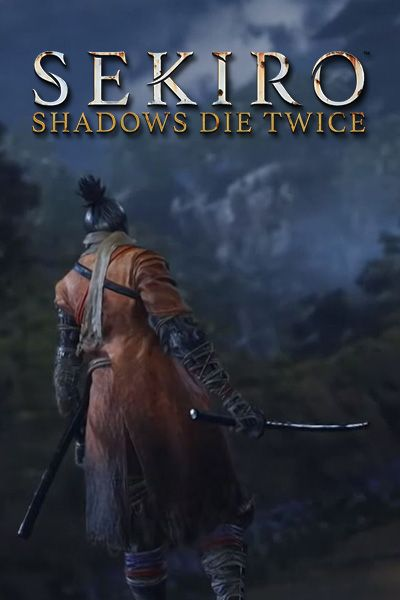
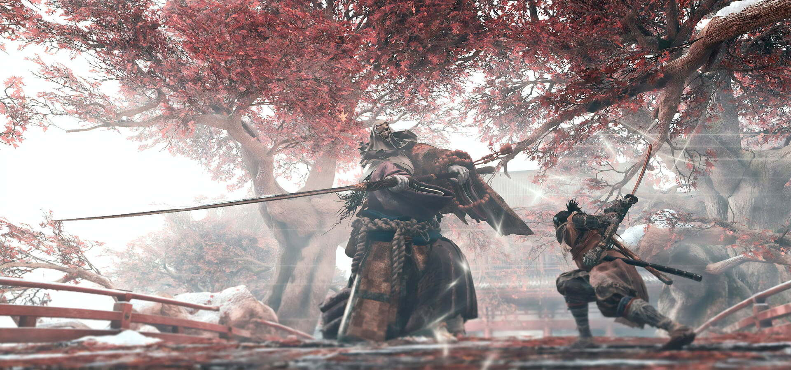

Sekiro

Sekiro: Shadows Die Twice es un videojuego de acción y aventura desarrollado por From Software y distribuido por Activision.El juego fue lanzado el 22 de marzo de 2019 en las plataformas PlayStation 4, Xbox One y Microsoft Windows.El juego sigue a un shinobi del Período Sengoku, conocido como Lobo, que intenta vengarse de un clan de samuráis que atacó y secuestró a su maestro. En un reinventado período Sengoku de finales del siglo XVI en Japón, el señor de la guerra Isshin Ashina organizó un golpe sangriento y tomó el control de la tierra de Ashina del Ministerio del Interior. Durante este tiempo, un shinobi errante llamado Ukonzaemon Usui, conocido por muchos como Búho, adoptó a un niño huérfano sin nombre, al que nombró Lobo, y lo entrenó en los caminos del shinobi. Dos décadas más tarde, el clan Ashina está al borde del colapso debido a que Isshin está ahora anciano y enfermo y a que los enemigos del clan se fueron acercando constantemente por todos lados. Desesperado por salvar a su clan, el nieto de Isshin, Genichiro, buscó a Kuro, el descendiente celestial, para poder usar el "Acervo del Dragón" del niño para crear un ejército inmortal. Lobo, ahora un shinobi de pleno derecho y el guardaespaldas personal de Kuro, pierde su brazo izquierdo al no poder detener a Genichiro. Sin embargo, ya que recibió la sangre del dragón de Kuro tres años atrás, Lobo sobrevive a sus heridas y se despierta en un templo abandonado. En el templo, se encuentra con el Escultor, un antiguo shinobi llamado Orangután que ahora esculpe estatuas de Buda, y Lobo encuentra que su brazo perdido ha sido reemplazado por la Prótesis Shinobi, un brazo artificial sofisticado que puede empuñar una gran variedad de artilugios y armas.El desarrollo de Sekiro comenzó a finales de 2015, tras la finalización del DLC para Bloodborne, The Old Hunters. El juego fue revelado a través de un breve tráiler durante el evento The Game Awards de 2017, mostrando el lema Shadows Die Twice. Posteriormente, fue anunciado su título oficial, Sekiro: Shadows Die Twice, en la conferencia de prensa de Microsoft en la E3 2018. El juego es dirigido por Hidetaka Miyazaki del estudio From Software, conocidos principalmente por ser los creadores de la saga Souls y Bloodborne, y fue publicado por Activision. La fecha de lanzamiento del juego se anunció durante la Gamescom de 2018, para el 22 de marzo de 2019 en las plataformas PlayStation 4, Xbox One y Microsoft Windows. La edición coleccionista del videojuego incluye una caja metálica, una figura del protagonista, un libro de arte, un mapa del mundo del juego, un código de descarga para la banda sonora y tres fichas que replican el dinero utilizado en el juego. Más información sobre Sekiro
